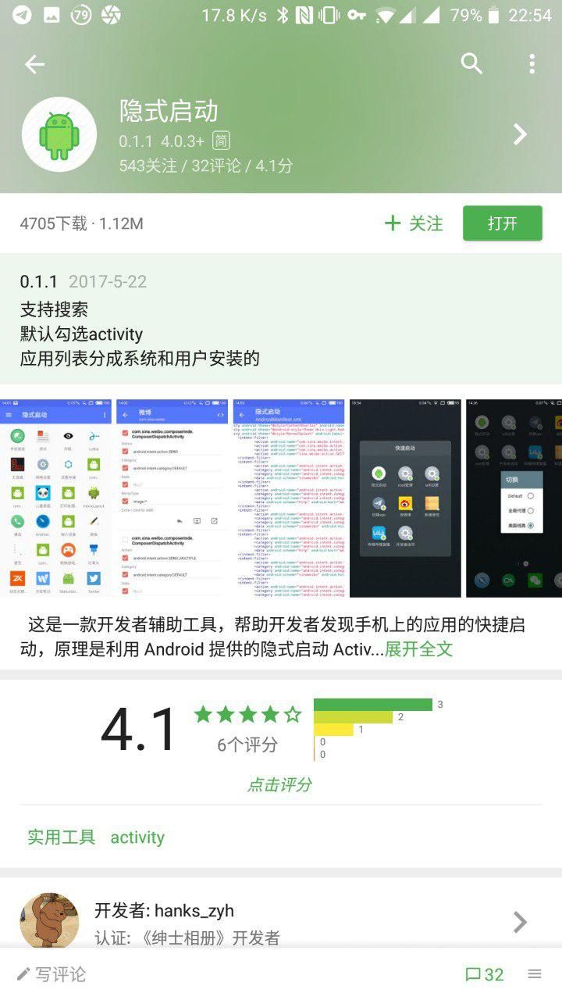
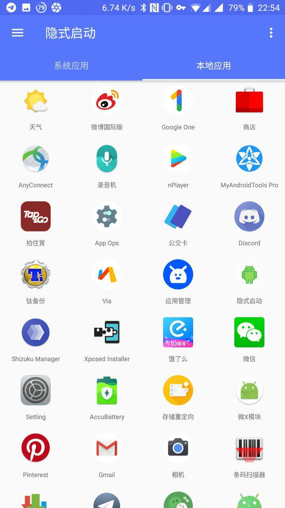
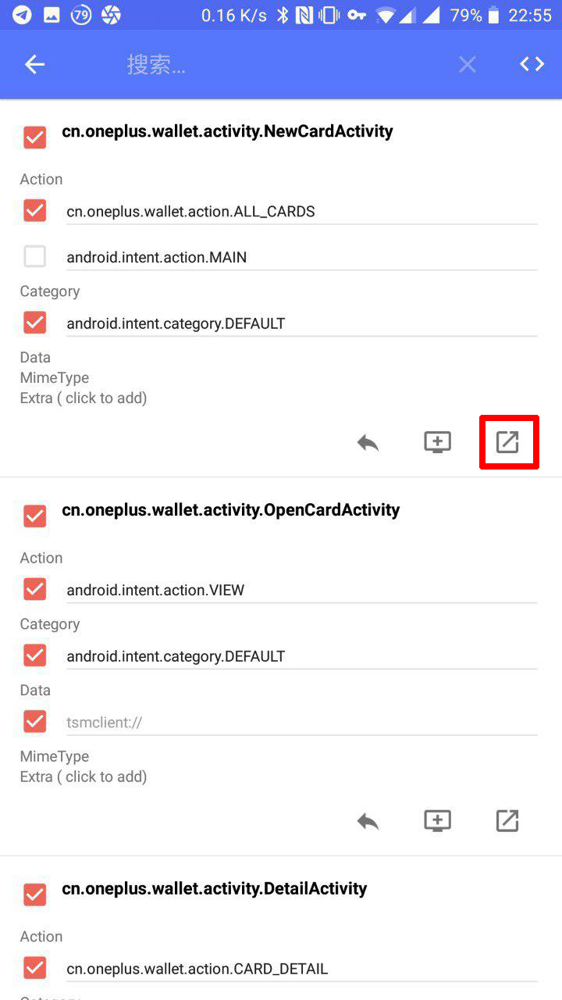
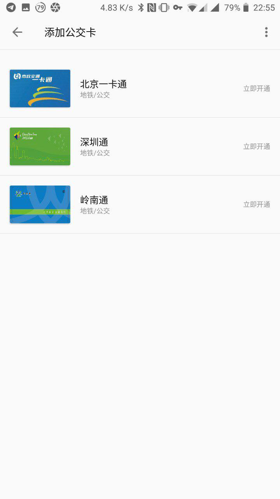
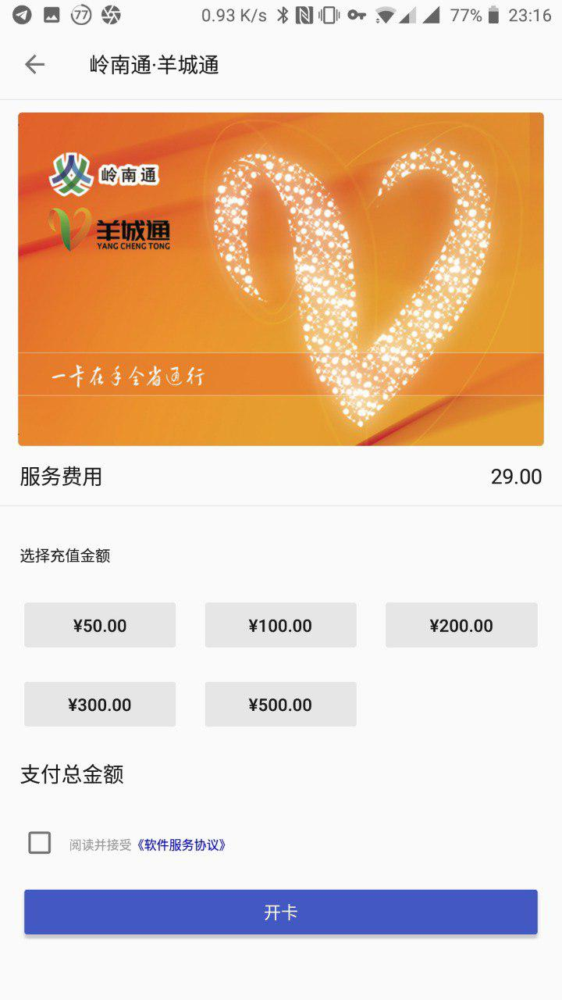
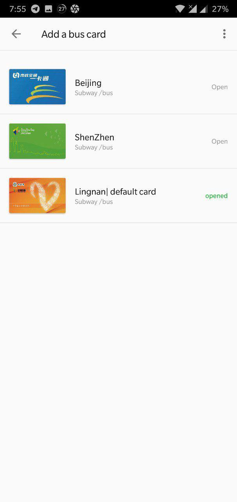
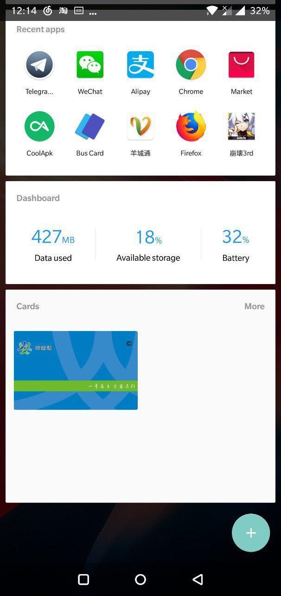

首先需要在 APKMirror 下载最新版本的公交卡插件，忘了从哪个版本开始的 OxygenOS 已经自带了卡券 app 故无需安装。
在 酷安 下载隐式启动 app 用于开启公交卡。「用隐式启动的原因是因为这个 app 无需 root 即可使用」
打开隐式启动，滑动到本地应用界面选择公交卡
点开公交卡，点击
NewCardActivity下面最右边的按钮即可添加公交卡。


添加成功后的公交卡会显示在一加桌面负一屏的
卡券widget中


感谢我的好友 @hloli 的发现和最后两张图，我因为有实体卡就不开了 233333